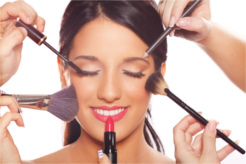
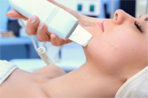
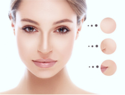
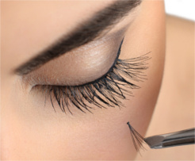

Dołącz do nas na:


{kind=link}
{kind=link}
{kind=link}
{kind=link}
Wykonywane zabiegi
Oraz przydatne informacje
Pielęgnacja skóry twarzy, dłoni czy stóp to nie tylko uroda, to również zdrowie fizyczne i psychiczne. Każda cera jest inna, ma inne wymagania i problemy. Czasami będzie to nawilżenie czy oczyszczenie, lecz często przy skórze bardziej wymagającej, dojrzałej wskazane jest działanie wielokierunkowe: liftingujące, odżywcze i jednocześnie uspokajające. Bardzo ważne jest dostarczenie skórze właściwych dla jej wieku i potrzeb składników aktywnych, które łączą urodę ciała z działaniem na psychikę za pośrednictwem zapachu i dotyku.
Makijaż

Profesjonalnie wykonany makijaż dodaje pewności siebie i pomaga wyglądać pięknie w każdej sytuacji. Naszym zadaniem jest odnalezienie indywidualnych cech Klientki aby podkreślić jej niepowtarzalność i naturalne piękno. Gwarantem trwałości i jakości makijażu są na pewno najwyższej jakości kosmetyki. Wykonujemy makijaż dzienny wieczorowy, ślubny oraz okolicznościowy.
Regulacja oraz henna

Piękna, wyrazista oprawa oczu jest bardzo ważnym elementem urody i atrakcyjności każdej kobiety. Każde oko jest inne, traktujemy je więc indywidualnie i do każdego stosujemy specjalną oprawę. Staranna stylizacja okolicy oka zapewnia nie tylko efekt powiększenia objętości i długości rzęs oraz wyrazistości brwi, ale również umożliwia poprawę rysunku oka i wydobycie barwy tęczówki. Henna to zabieg kosmetyczny wykonywany na brwiach i rzęsach celem długotrwałego nadania im wyrazistego koloru. Dzięki farbowaniu nawet najkrótszych włosków, zwykle nietuszowane, uzyskiwany jest efekt zagęszczenia rzęs. Długotrwałe utrzymywanie się efektu pozwala na czasowe zaprzestanie czynności kosmetycznych wykonywanych na brwiach i rzęsach. Zabieg jest całkowicie bezpieczny i wbrew obiegowej opinii nie prowadzi do znaczącego osłabiania włosków. Ze względu na możliwość przedostania się henny do oka, zabieg może spowodować drobne podrażnienia u osób ze szczególnie wrażliwymi oczami.
Sonoforeza

Jest to zabieg, który wykorzystuje zjawisko fal ultradźwiękowych. Masaż ultradźwiękowy znacznie poprawia ukrwienia skóry i jest wykorzystywany w celu wtłoczenia w głębsze warstwy skóry preparatów odżywczych, nawilżających oraz leczniczych. Ciepło wytworzone przez ultradźwięki wnika głębiej w tkankę, aby odprężyć skórę i mięśnie, podczas gdy głeboki delikatny masaż poprawia przepływ krwi i limfy, metabolizm i regenerację komórek. zabieg jest doskonałym dopełnieniem innych zabiegów. Można go stosować doraźnie, w celu odświeżenia skóry jako pojedyńczy zabieg, bądź w serii. Idealny efekt daje połączenie peelingu kawitacyjnego a następnie sonoforezy.
- spłycenie zmarszczek
- ujędrnienie
- przyśpieszenie wygładzenia blizn
- likwidacja worków i cieni pod oczami
- wzmocnienie naczyń krwionośnych
- nawilżenie i wygładzenie skóry
- stymulacja mięśni
- likwidacja przebarwień
- dokładne odżywienie
- rozszerzone narzynia włosowate
- nerwica naczyniowa
- odmrożenia
- trądzik pospolity
- trądzik różowaty
- nowotwory i stany po ich operacyjnym usunięciu
- ciąża
- niewydolność krążenia
- obecność w tkankach ciał obcych metalicznych (rozrusznik serca, ortodontyczny aparat korekcyjny- nazębny, itp.)
- nerwica wegetatywna znacznego stopnia
- uporczywe migreny
- epilepsja
Seria zabiegów wynosi 5-12, początkowo co 1-2 tygodnie, następnie co 1-3 miesiące w celu podtrzymania efektu.
Zabiegowi towarzyszy uczucie lekkiego mrowienia. Bezpośrednio po zabiegu skóra jest nieznacznie zaczerwieniona, rumień może się utrzymywać do 2 dni. 4 tygodnie po zabiegu nie należy się opalać.
Peeling kawitacyjny

Jest to zabieg polegający na oczyszczeniu skóry za pomocą ultradźwięków. Usuwanie zanieczyszczeń oraz martwych komórek przebiega bezpiecznie i bezboleśnie. To system do głębokiej pielęgnacji skóry i jej regeneracji, bez efektów ubocznych. Peeling kawitacyjny działa na skórę łagodnie poprzez przyjemne, naturalne wibracje. Zastosowanie tego urządzenia pozwala na głęboką regenerację skóry poprzez błyskawiczne i efektywne jej odnowienie oraz oczyszczenie na dużej głębokości, czego rezultatem jest - zauważalna w widoczny sposób - skóra odnowiona i odświeżona.
Peeling kawitacyjny pozwala na dokładne usunięcie nadmiaru sebum z porów i mieszków włosowych, pozbycie się zrogowaciałego naskórka, zaskórników, wągrów i bakterii. Peeling kawitacyjny może być stosowany przy skórze bardzo wrażliwej, delikatnej oraz cienkiej, skłonnej do podrażnień i rozszerzonych naczynek, a także jako bezinwazyjny zabieg oczyszczający dla skóry trądzikowej i przetłuszczającej się. Może być przeprowadzany na twarzy, dekolcie oraz plecach. Bardzo dobre efekty uzyskuje się łącząc peeling kawitacyjny z sonoforezą (ultradźwiękami). Fale emitowane przez specjalne urządzenie masują skórę i wprowadzają substancje aktywne w głąb do skóry właściwej.
- oczyszczenie skóry
- ujędrnienie tkanek (mikromasaż)
- leczenie trądziku
- usuwanie martwych komórek, zaskórników
- stymulacja metabolizmu komórek
- efekt rozjaśnienia skóry
- ciąża
- choroby nowotworowe
- rozrusznik serca
- epilepsja
Zalecana ilość zabiegów: 4-6 zabiegów - leczniczo, raz w tygodniu. Aby podtrzymać efekt zaleca się wykonanie zabiegu raz w miesiącu.
I MASK PURIFYING PROBIOTIC MASK

MASKA Z PROBIOTYKIEM, PREBIOTYKIEM, OCZYSZCZA I PRZYWRACA RÓWNOWAGĘ Nowej generacji maska przywraca równowagę skórze dzięki odnowieniu naturalnej flory bakteryjnej na skórze. Odnowienie jest możliwe dzięki obecności probiotyku w postaci lizatów bakterii czyli fragmentów bakterii w postaci aktywnej, ale bezpiecznej. Dodatkowo zielona glinka i aktywny węgiel oczyszczają skórę z nadmiaru sebum, obkurczają pory i wygładzają naskórek. 93% badanych potwierdziło znaczną poprawę w wyglądzie skóry już po jednej aplikacji.
Problematyczne, przetłuszczające się, z tendencją do wyprysków, okresowo rozregulowane np. przez leki.
Bardzo szybko skóra odzyskuje równowagę, odtoksycznia się, mniej się świeci, jest gładsza, nawilżona, stopniowo coraz mniej tworzy się stanów zapalnych. Wygląda zdrowo.
Na oczyszczoną powierzchnię skóry nałożyć cienką warstwą i zostawić do wyschnięcia na ok. 10 – 20 minut. Zmyć letnią wodą. Stosować 3 – 5 razy w tygodniu.
- Probiotyk W postaci dobroczynnych lizatów bakterii (fragmentów) Lactobacillus w postaci aktywnej, ale bezpiecznej. Przywraca równowagę florze bakteryjnej, ogranicza produkcje sebum, nawilża.
- Prebiotyk Substancje odżywcze (białka, tłuszcze lub polisacharydy), które stanowią pokarm dla dobroczynnych bakterii i dzięki temu wspomagają ich rozwój. Przyczyniają się do odnowy naturalnej flory bakteryjnej i zapewniają jej prawidłowe działanie.
- Superfruit complex Kompleks extraktów roślinnych z: jagód goi i akai, granatu, mongostanu. Działanie rozświetlające i antyoksydacyjne.
- Zielona glinka Bogata glinka brazylijska, wchłania zanieczyszczenia i nadmiar sebum, obkurcza pory i wygładza.
- Aktywny węgiel Odtoksycznia skórę, pochłania zanieczyszczenia i nadmiar sebum, zalecany dla cer trądzikowych.
- Ekstrakt z wierzbówki Niweluje stany zapalne, ogranicza produkcje sebum. Zalecana dla cer trądzikowych.
I MASK TRANSFORMATIONAL FIRMING MASK
MASKA Z EKSTRAKTEM Z JAGÓD I KOMPLEKSEM DOTLENIAJĄCYM, WYGŁADZA I REWITALIZUJE Nowej generacji maska z ekstraktem z jagód expressowo odstresowuje i odtoksycznia skórę. Mikrokuleczki z olejku z jojoby delikatnie złuszczają i odświeżają martwy naskórek, a glinka wulkaniczna-bentonit i glinka mineralna-kaolin oczyszczają i odtoksyczniają dokładnie skórę. Idealnym dopełnieniem jest kwas hialuronowy, sok aloesowy i kompleks dotleniający, które nawilżają i wygładzają skórę. 97% badanych potwierdziło znaczną poprawę elastyczności i jędrności skóry już po jednej aplikacji.
Zestresowane, poszarzałe, odwodnione, z utratą elastyczności, ze zmarszczkami.
Expresowo odstresowuje, nawilża, wygładza, spłyca zmarszczki, rozświetla. Skóra wyraźnie wygląda młodziej.
Na oczyszczoną powierzchnię skóry nałożyć cienką warstwą i zostawić do wyschnięcie na ok 5 – 15 minut. Lekko zwilżonymi palcami przemasować przez 1 min przed zmyciem letnią wodą. Stosować 3 – 5 razy w tygodniu.
- Ekstrakt z jagód zawiera fito hormony, które stymulując metabolizm komórkowy przyspieszają odtoksycznianie i regenerację tkanek, a także pobudzają produkcje kolagenu, poprawiając elastyczność i przywracają zdrowy koloryt skórze.
- Glinka wulkaniczna bentonit bogata w minerały, zwłaszcza w wapń, magnez, żelazo i potas wspomaga detoxykacje i oczyszczenie skóry z zanieczyszczeń
- Glinka mineralna kaolin najdelikatniejsza z glinek, zalecana także dla cer wrażliwych, skutecznie oczyszcza skórę z zanieczyszczeń i wygładza powierzchnię naskórka
- Kompleks dotleniający zawiera m.in. perfluorheksan. Natychmiastowo nawilża i wygładza skórę
- Mikrokuleczki z olejku jojoba naturalnie złuszczają martwy i poszarzały naskórek, wyrównują jego powierzchnię i nadają mu gładkość
- Sok aloesowy i kwas hialuronowy szybko i długotrwale nawilżają i koją
I MASK HYDRATING HYDROGEL SHEET MASK

Najnowszej generacji trójwymiarowa maska hydrożelowa w płacie. Trójwymiarowa technologia pozwala na znacznie głębszą penetracje składników aktywnych w głąb skóry co przyspiesza, zwiększa i wydłuża efekty. Maska expressowo nawilża i wygładza skórę. Zawiera „bombę nawadniającą”: kwas hialuronowy, wodę mineralną i wulkaniczną, ekstrakt z korzeni Dziwidła, mech irlandzki oraz ekstrakty roślinne.
Każdy, w szczególności sucha, odwodniona, wrażliwa, po intensywnych zabiegach medycyny estetycznej, po peelingach chemicznych.
Ta unikalna hydrożelowa maska sprawia, że skóra jest natychmiast mocno nawilżona, wygładzona i promienna.
Wykonaj demakijaż skóry. Wyjmij maskę z foliowego opakowania. Rozpakuj maskę i żelową stroną nałóż na skórę, następnie zdejmij wierzchnią folię, wygładź dokładnie maskę na skórze przy pomocy opuszków palców tak aby nie powstały żadnego rodzaju bąbelki powietrzne. Trzymaj na skórze 5 – 10 min, następnie usuń płat hydrożelowy, nie zmywaj pozostałości tylko delikatnie wmasuj je w skórę. Stosuj 2-3 razy w tygodniu. Idealna podczas długich podróży samolotem, ekspozycji słonecznych, kuracji lekowych w celu optymalizacji nawilżenia.
- Kwas hialuronowy wiąże i przytrzymuje wodę
- Woda wulkaniczna z Jeju poprawia nawilżenie, zwiększa przenikalność składników aktywnych.
- Woda mineralna z Onsen Sui poprawia nawilżenie, detoksykuje skórę
- Mech irlandzki (karagen) uzupełnia nawilżenie, działa także antyseptycznie
- Ekstrakt z korzeni Dziwidła Źródło bogatych ilości błonnika (glukomannam) pochłaniającego rekordowe ilości wody (200 x swojej masy)
- Sok aloesowy Doskonale nawilża, łagodzi, działa także antyseptycznie
- Zielona herbata chińska Działanie łagodzące, antyoksydacyjne
I MASK ANTI AGING HYDROGEL SHEET MASK

Najnowszej generacji trójwymiarowa maska hydrożelowa w płacie. Trójwymiarowa technologia pozwala na znacznie głębszą penetracje składników aktywnych w głąb skóry co przyspiesza, zwiększa i wydłuża efekty. Maska expressowo napina, wygładza i rozświetla skórę. Zawiera hexapeptyd, argininę, ekstrakt z lukrecji gładkiej i mącznicy lekarskiej, karob, wodę mineralną i wulkaniczną oraz antyoksydanty.
Każdy, w szczególności dojrzała z przebarwieniami, zmarszczkami, nierównomiernym kolorytem, zmęczona, poszarzała.
Ta unikalna hydrożelowa maska sprawia, że skóra jest natychmiast wygładzona, rozświetlona i wyraźnie odmłodzona.
Wykonaj demakijaż skóry. Wyjmij maskę z foliowego opakowania. Rozpakuj maskę i żelową stroną nałóż na skórę, następnie zdejmij wierzchnią folię, wygładź dokładnie maskę na skórze przy pomocy opuszków palców tak aby nie powstały żadnego rodzaju bąbelki powietrza.
Pozostaw na skórze 5 – 10 min, następnie usuń płat hydrożelowy, nie zmywaj pozostałości tylko delikatnie wmasuj w skórę. Stosuj 2-3 razy w tygodniu.
- Acetyl Hexapeptyd-8 peptyd, zmniejsza widoczność głębokich bruzd o 32% po 28 dniach stosowania.
- Arginina aminokwas, podnosi elastyczność i nawilżenie.
- Woda wulkaniczna z wyspy Jeju poprawia nawilżenie, zwiększa przenikalność składników nawilżających
- Woda mineralna Onsen Sui poprawia nawilżenie, detoksykuje skórę
- Ekstrakt z lukrecji gładkiej naturalny składnik rozjaśniający
- Ekstrakt z mącznicy lekarskiej (arbutyna) inhibitor tyrozynazy, zapobiega nadmiernej produkcji melaniny w skórze.
- Beta glukan polisacharyd, działa antyoksydacyjnie, przeciwzapalnie, przeciwzmarszczkowo.
- Ekstrakt z żeńszeń działa antyoksydacyjnie, przeciwzapalnie, przeciwzmarszczkowo.
- Karob (ekstrakt z drzewa świętojańskiego) Bogactwo minerałów i cukrów, doskonale wspiera metabolizm komórkowy.
Przedłużanie rzęs 1:1

Piękne długie i gęste rzęsy to marzenie każdej z nas. Może się ono spełnić dzięki zabiegowi przedłużania rzęs metodą 1:1 Metoda jest całkowicie bezpieczna, polega na przyklejeniu jednej rzęsy do jednej rzęsy naturalnej, dzięki czemu osiągamy efekt przedłużenia, pogrubienia i zagęszczenia. Długość rzęs, ich grubość i profil możemy wybrać wspólnie byś była w pełni usatysfakcjonowana. Rzęsy wykonane są z dwóch rodzajów materiału: wysokiej jakości syntetycznego jedwabiu lub z włosia norek, a specjalny klej, którym przymocowuje się rzęsę jest trwały, elastyczny i przede wszystkim bezpieczny dla oka. Naturalny cykl życia rzęsy trwa ok. 90 dni; nasze rzęsy, podobnie jak włosy, rosną, wypadają, a w to miejsce od razu rosną kolejne.
Efekt przedłużenia jest uzależniony od tego cyklu i utrzymuje się średnio do miesięca, dlatego, jeśli chcemy bardzo długo cieszyć się pięknymi rzęsami , uzupełniamy je co 2-4 tygodnie.
Dermalift - Medycyna Estetyczna & Kosmetologia ©
Korzystając ze strony akceptujesz pliki cookies.